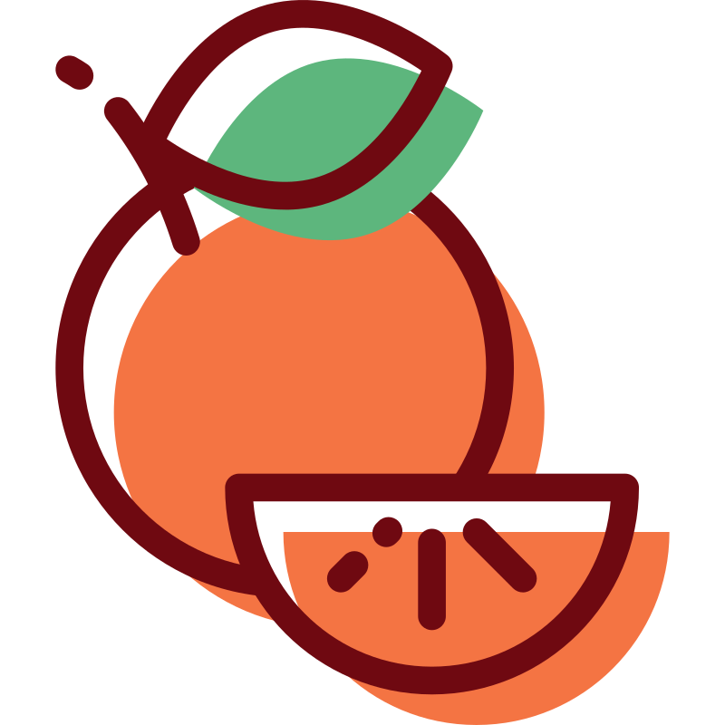

Vocabulary & Reading
Vocabulary & Reading
Vocabulary Warm-Up
Translate the words from English to Ukrainian (skip the words you don't know and try again after reading the text):
- noise →
- strange / weird →
- to notice →
- a note →
- curious →
- to reach out (for smth) →
- to drop (smth) →
- pocket →
- to find out →
- to solve (a mystery) →
Reading
Завдання: Читаючи текст, зупиняйся після кожної виділеної (чорної) частини речення та визначай, який граматичний час (або часи) у ній використано.
Robin and Miss Lemon have already finished doing the inventory. Now they are having tea and biscuits together.
"Robin, I heard a strange noise earlier," says Miss Lemon. "What happened?"
"While I was organizing books on the top shelf, I noticed a small note behind them," Robin explains. "I reached out for it, and I dropped a few books on the floor."
"A note? Do you still have it?" asks Miss Lemon. She has always been curious.
Robin pulls the note from her pocket and shows it to Miss Lemon. They try to read it together. Some letters are missing from the sentences.
"This note is so weird," says Robin. “I have just read it twice, but I still don’t understand it.”
"It really is strange," Miss Lemon agrees. "I haven't found out what it means yet, either." She looks at the note again. "I want to know what it means. Let's solve this mystery together!”
Check Your Understanding
- What have Robin and Miss Lemon already finished?
- How many times has Robin read the strange note?
- Have they found out what the note means yet?
Pronunciation
- biscuit /ˈbɪskɪt/
- curious /ˈkjʊəriəs/
- weird /wɪəd/
- mystery /ˈmɪstri/
- earlier /ˈɜːliə/
- either /ˈaɪðə/
- notice /ˈnəʊtɪs/
- pocket /ˈpɒkɪt/
- genre /ˈʒɒnrə/
- favourite /ˈfeɪvərɪt/
- vase /vɑːz/
- crumb /krʌm/
- carpet /ˈkɑːpɪt/
 Grammar
Grammar
1. Present Perfect чи Past Simple?
На минулому уроці ми вивчили формулу Present Perfect: have/has + V3. Сьогодні розберемося, коли вона потрібна, а коли краще вжити Past Simple.
Головна ідея
Past Simple розповідає про минуле. Present Perfect з'єднує минуле з теперішнім: дія сталася раніше, але нас цікавлять наслідки зараз.
| Past Simple | Present Perfect | |
|---|---|---|
| Про що ми говоримо | про подію в минулому | про результат або ситуацію зараз |
| Час | названий, завершений (yesterday, ago...) | не названий, або період ще триває |
| Приклад |
Robin dropped her pen. Вона впустила ручку (і, можливо, вже підняла). |
Robin has dropped her pen. Ручка лежить на підлозі просто зараз. |
Коли використовувати Present Perfect
-
Результат, який видно зараз. Не
важливо, коли саме це сталося — важливо, що ми маємо тепер.
Robin has arranged the top shelf. (Тепер усі книги стоять акуратно.)
Robin has found a strange note. (Тепер записка в неї, а не на полиці.) -
Досвід у житті — ми не кажемо коли
саме, а лише чи було це взагалі.
Have you ever seen a cat in a library?
I have never noticed this door before. -
Дія почалася в минулому і триває досі.
Це найчастіший випадок.
Miss Lemon has worked here for five years. (Вона й зараз тут працює.)
Robin has studied math since 2020. (Вона все ще її вивчає.)
since + з якого моменту: since 2019, since lunch, since Monday
Коли використовувати Past Simple
Коли ми називаємо конкретний момент або період, який вже закінчився. Навіть якщо це було п'ять хвилин тому.
- Robin found the note yesterday.
- We found out the truth five minutes ago.
- Miss Lemon started this job in 2019.
Також ми використовуємо цей час, коли розповідаємо історію і перераховуємо ланцюжок подій у минулому (дії, що відбувалися послідовно, одна за одною).
- She had dinner. Then she brushed her teeth and went to sleep. She woke up early the next day.
Слова-підказки
| Past Simple | Present Perfect |
|---|---|
| yesterday | already |
| last night / week / month / year | just |
| an hour ago, two days ago | yet |
| in 2020, on Monday | ever, never, before |
| when I was a child | for, since |
Період, який ще триває
Слова today, this week, this month, this year можуть бути з Present Perfect, бо це час, який ще не завершився.
Слова this morning / afternoon / evening можуть бути і з Past Simple, і з Present Perfect, залежно від того, чи цей період вже закінчився, чи ні.
- Зараз 6 вечора: I saw Robin this morning. (Past Simple) — ранок вже минув.
- Зараз 10 ранку: I have seen Robin this morning. (Present Perfect) — ранок ще триває.
- Robin has noticed three strange things in the library this week. — цей тиждень ще не закінчився.
🌻 Як сказати англійською?
- Він знайшов цю записку у своїй кишені вчора.
- Ми дізналися правду п'ять хвилин тому.
- Я ніколи раніше не чула цю пісню.
- Він не розгадав жодної таємниці з 2020 року.
2. Already, just, yet
Ці три слова дуже часто "супроводжують" Present Perfect. Вони розповідають, наскільки недавно щось сталося, або чи це вже сталося.
| Слово | Значення | Де стоїть | Приклад |
|---|---|---|---|
| already | вже (можливо, раніше, ніж очікували) | між have/has і V3 | Robin has already found three notes. |
| just | щойно (дуже недавно) | між have/has і V3 | Miss Lemon has just noticed a tiny bird drawing on the note. |
| yet | ще не (в запереченні) вже? (в питанні) |
в кінці речення |
They haven't solved the mystery
yet. Have you found out what it means yet? |
Запам'ятай: already і just стоять всередині речення, а yet — тільки в кінці й лише в запереченнях та питаннях.
🌻 Як сказати англійською?
- Він щойно впустив книгу на підлогу.
- Я вже виконала всі завдання.
- Вони ще не дізналися правду.
3. Present Perfect із дієсловом "to be"
Дієслово to be має три форми, які ми вже знаємо: is/are (Present Simple) та was/were (Past Simple). У Present Perfect з'являється третя форма (V3) — been.
| Формула | Приклад | |
|---|---|---|
| + | have/has + been | She has been busy all day. |
| − | haven't/hasn't + been | She hasn't been here since Monday. |
| ? | Have/Has + підмет + been? | Has she been here long? |
Після been може стояти:
- іменник (хто вона?): She has been a librarian for six years.
- прикметник (яка вона?): He has been busy all day.
- місце (де вона?): Robin has been at the front desk since lunch. (вона й досі там)
Порівняй усі три форми:
| Present Simple | Past Simple | Present Perfect |
|---|---|---|
| Miss Lemon is curious. | Miss Lemon was curious yesterday too. | Miss Lemon has been curious her whole life. |
| Miss Lemon is a librarian. | Before this job, she was a teacher. | Miss Lemon has been a librarian since 2019. |
| Robin is at the front desk. | Robin was at the front desk an hour ago. | Robin has been at the front desk since lunch. |
Важлива деталь: been чи gone?
Коли ми говоримо, що хтось кудись пішов або поїхав, у Present Perfect використовують два різні дієслова:
-
has gone (to) — пішов і
досі там (ще не повернувся).
She has gone to the supermarket. (Вона ще не повернулася). -
has been (to) — побував десь і
вже повернувся назад.
She has been to the supermarket. (Вона туди ходила і вже повернулася).
🌻 Як сказати англійською?
- Це завжди було таємницею.
- Я завжди була допитливою.
- Студенти сьогодні весь день у бібліотеці.
- Вона пішла в школу. (вона досі там)
- Так, я була в Італії, двічі.
Practice
Exercise 1
Complete the sentences about Cinnamon the cat with the Present Perfect or Past Simple form of the verb in brackets.
Cinnamon a library cat for five years, and she the students' favourite since her first day there. Many students often come to the library just to give her treats. She three treats today. And yesterday a student even a toy mouse for her.
Robin a biscuit. It's on the floor now. Last time, when she some food, Cinnamon it and away with it.
Cinnamon anything in the library yet. Though she almost an expensive vase last year.
Exercise 2
This note from the front desk has 6 mistakes with verb forms. Find and correct them.
Robin is working at the front desk today. She was very busy since the moment she came to work.
The first student has come to the library at 9 AM to borrow a mystery novel. She said that she has never read anything from this genre. Robin showed her the right shelf and recommended some books by Agatha Christie. "I have organised this shelf by the authors’ names yesterday, so the books are easy to find," Robin explained.
Later, another student returned a few overdue books. Then she went to the reading room to study, but she has forgot her library card on the front desk. Robin ran after her to return it. The student already took a seat by the window, and she just started reading.
Note: Фраза to take a seat перекладається як "сісти" або "зайняти місце". Це трохи більш ввічлива альтернатива до sit down.
Exercise 3
Read each situation and say your answer out loud. Use already, just or yet and the words in brackets.
- Miss Lemon says, "Please organise the books on the top shelf before noon." It's only 10 AM, and you have done it.
- Robin comes in and asks, "What was that noise?" A student dropped a pile of books a moment ago.
- Your friend asks, "What does the note say?" You haven't opened it, but you are going to.
- Robin asks, "Should I give Cinnamon a treat?" She has eaten three treats today, and that's enough.
- You want to know if Miss Lemon has found out what the strange note means. Ask her.
- Your friend asks, "Why is Robin so excited?" She found a strange note a moment ago.
- Robin says, "Shall I tell you how 'Murder on the Orient Express' ends?" You have read the whole book, so you know the ending.
- It's 8 PM. Robin asks, "Can we close the library now?" But some students are still in the reading room.
- Miss Lemon asks, "Would you like some tea?" You drank a cup of tea five minutes ago.

HomeworkЗавдання
Уяви себе в ролі вчителя. Підготуй коротке пояснення своїми словами, як використовувати Present Perfect із такими маркерами часу:
- already
- just
- yet
Для наочності підготуй речення-приклад для кожного слова. Слово yet потребує двох прикладів: заперечне речення і питальне.